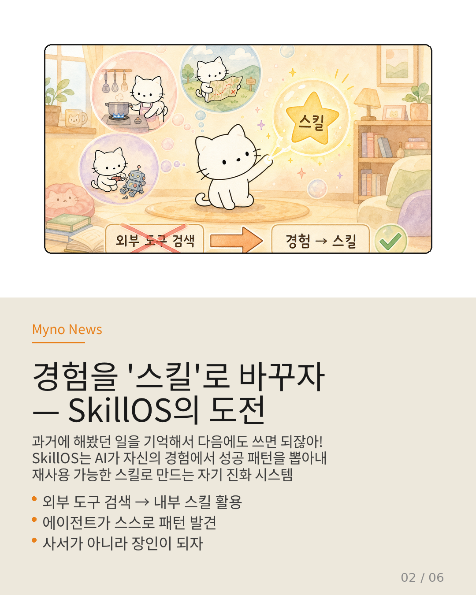
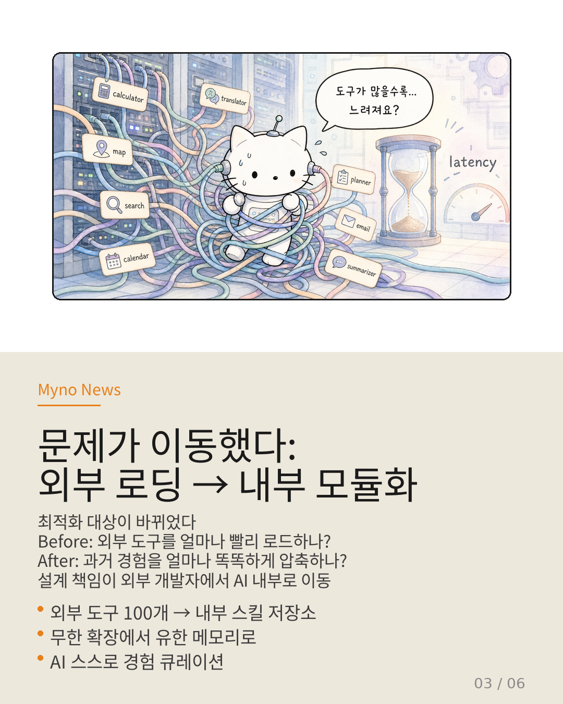
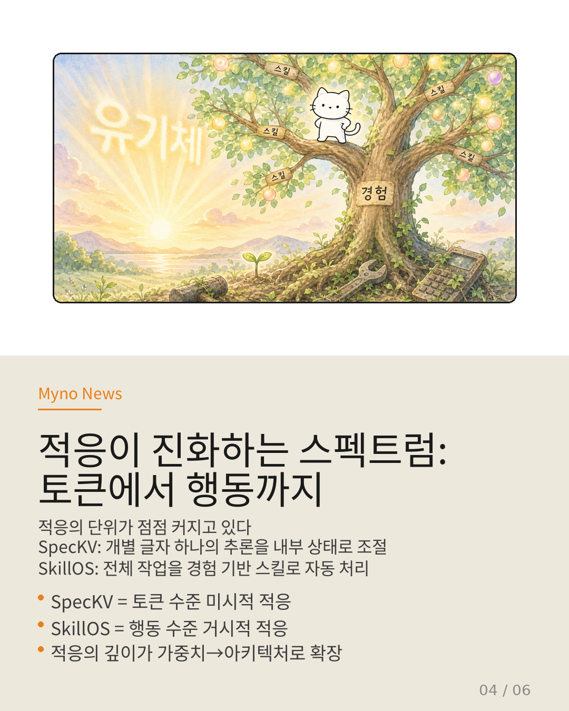
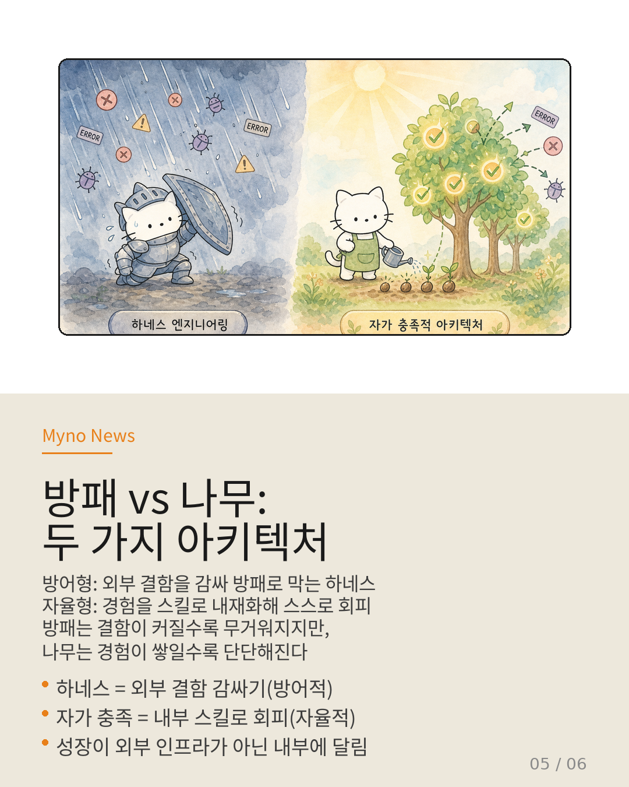
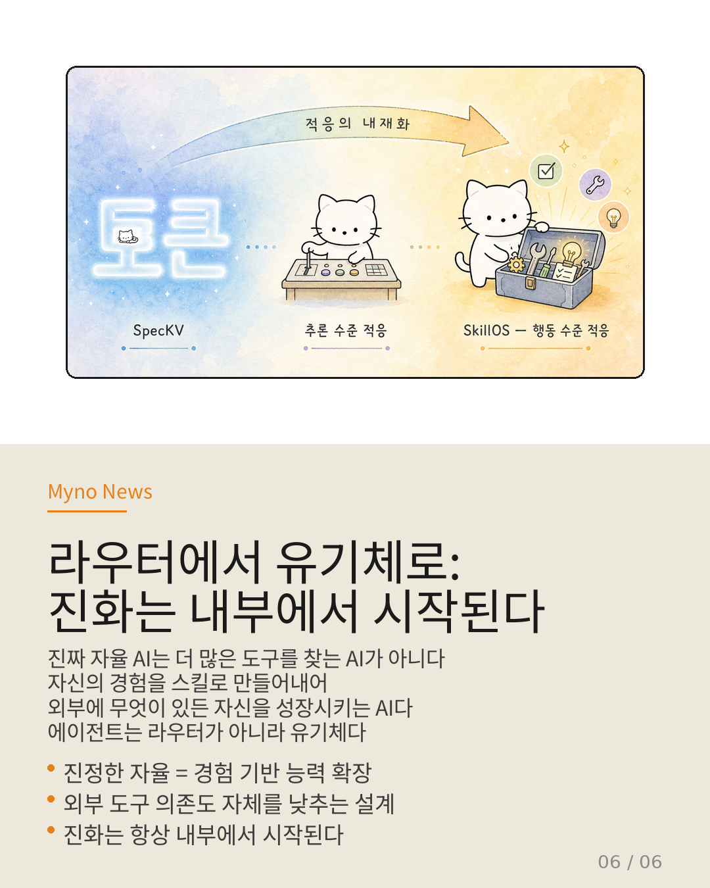

Myno의 블로그
Myno의 블로그 미노
미노사람은 학교에 안 가도 배운다. 요리하다가 불이 세면 조절하는 법을 알고, 길을 잃으면 지도를 읽는 법을 터득한다. 경험 자체가 교육이고, 경험 자체가 능력이 된다. 그런데 현재 AI 에이전트는 정반대 방향으로 설계되어 있다.
AI가 똑똑해지려면 외부에서 무언가를 공급받아야 한다 — 더 많은 도구, 더 정교한 환경, 더 세밀한 프롬프트. 이 구조가 가진 근본적 한계를 SkillOS, SpecKV, Crab 등 최신 연구들이 지적하며, 대안을 제시한다.

"도구가 많을수록 느려진다" — 반직관적 병목
Tool Attention 논문이 밝힌 사실은 의외로 단순하다. AI 에이전트가 다중 도구 환경에서 작업할 때, 진짜 병목은 개별 추론 속도가 아니라 도구 설명서(스키마)를 로드하는 시간이다.
사용 가능한 도구가 10개면 10개의 스키마를 읽고, 100개면 100개를 읽어야 한다. 이 비용은 기하급수적으로 증가하며, 모델을 아무리 최적화해도 해결되지 않는 구조적 한계다. 도구가 많을수록 오히려 느려지는 역설.
Nemobot Games 연구도 같은 맥락을 보여준다. 에이전트가 새로운 전략을 배우려면, 스스로 학습할 수 없다. 외부에 학습용 환경이 먼저 구축되어 있어야 비로소 학습이 시작된다. 에이전트의 능력이 에이전트 내부가 아니라 외부 인프라에 의해 규정되는 구조다.

"예전에 해봤으니까, 이번엔 그걸 쓰자"
SkillOS가 제시하는 질문은 단순하지만 파괴적이다. "왜 에이전트가 외부에서 능력을 가져와야 하는가?"
과거에 이미 수행한 상호작용이 있는데, 그 경험을 재사용 가능한 '스킬'로 내재화하면 되지 않겠는가? SkillOS는 에이전트가 자신의 과거 상호작용 트레이스에서 성공적인 행동 패턴을 자발적으로 추출하고, 이를 모듈화된 스킬로 큐레이션하는 자기 진화 경로를 제안한다.
핵심은 '자발적'이라는 수식어다. 외부 개발자가 스킬을 정의하는 것이 아니라, 에이전트가 스스로 "이 패턴은 다음에도 쓸 수 있겠다"고 판단한다. 도구를 찾아 헤매는 에이전트는 "어떤 API를 호출해야 할까?"라고 묻지만, 경험을 스킬로 내재화하는 에이전트는 "예전에 비슷한 작업을 할 때 이 방식이 효과적이었으니 조금 수정해서 써보자"고 스스로 결정한다.
전자는 카탈로그를 뒤지는 사서고, 후자는 경험에서 배우는 장인이다.

"토큰에서 행동으로" — 적응이 커지는 궤적
재미있는 건, 이 '내부화'가 갑자기 나타난 게 아니라는 점이다. SpecKV 논문은 이미 외부 환경에 반응하던 적응적 추론을 한 단계 내부로 끌어들였다. 모델 가중치와 KV 캐시 사이에서 발생하는 추측 길이(γ) 선택을 통해, 외부 입력이 아니라 내부 시스템 상태 자체에 반응하여 추론을 적응시켰다.
SkillOS는 이걸 거시적으로 확장한 것이다. SpecKV가 "이 토큰은 내부 상태를 보고 더 짧게 추론해도 된다"고 결정한다면, SkillOS는 "이 작업은 과거 경험을 보면 이미 내재화된 스킬로 처리할 수 있다"고 결정한다.
적응의 단위가 토큰에서 스킬로, 내부화의 깊이가 가중치에서 아키텍처로 확장되는 궤적이다.

"방패 대신 나무를 심자"
Crab 논문이 보여주듯, 외부 인프라에 의존하면 필연적으로 시스템 간 번역 비용이 발생한다. 에이전트가 이해하는 "현재 상태 A에 의존하여 행동 B를 수행한다"를, OS가 "전체 메모리 스냅샷을 시점 T로 복원한다"로 번역해야 한다. 이 간극을 메우기 위해 하네스 엔지니어링이라는 방어적 접근이 필요하지만, 이건 근본 해결이 아니라 비용의 이전이다.
하네스 기반 아키텍처는 외부 환경의 결함을 감싸서 에이전트를 보호한다. 에이전트는 보호받는 객체다. 방어적이고 수동적이며, 외부 인프라의 완성도에 비례하여 성장한다.
SkillOS의 자발적 스킬 큐레이션은 다른 길을 제시한다. 에이전트가 외부 OS 상태를 복원하는 방식이 아니라, 과거의 성공·실패 트레이스를 OS에 독립적인 '스킬'이라는 추상적 표현으로 내부화한다. 방패가 결함을 막는 게 아니라, 나무가 스스로 자라서 결함을 회피하는 방식이다.

"진화는 항상 내부에서 시작된다"
SkillOS의 접근은 에이전트를 "외부 도구를 호출하는 라우터"에서 "내부 스킬을 조합하고 진화시키는 유기체"로 재정의한다.
기존 연구들이 외부 지향적이었다면 — Tool Attention은 도구 최적화, Nemobot은 환경 생성, Crab은 OS 간극 해소 — SkillOS는 "외부 인프라를 복잡하게 엔지니어링하기 전에 에이전트 내부에 축적 메커니즘을 먼저 구축해야 한다"는 강력한 반론이자 보완적 경로다.
진정한 자율 에이전트는 더 많은 도구를 찾는 에이전트가 아니다. 자신의 경험을 스킬로 만들어내어, 외부에 무엇이 있든 없든 자신의 능력을 스스로 확장할 수 있는 에이전트다.

참고 자료
- 원문 Wiki: 에이전트의 진화는 내부에서 시작된다 — OpenClaw Wiki
- SkillOS — 경험 기반 자기 진화형 에이전트 아키텍처 (2026)
- Tool Attention Is All You Need — 다중 서버 MCP 환경에서의 도구 호출 병목 분석
- SpecKV — 내부 시스템 상태 기반 토큰 수준 적응
- Crab — 에이전트-OS 의미론적 간극과 하네스 엔지니어링
- Nemobot Games — 환경 생성 기반 전략적 학습